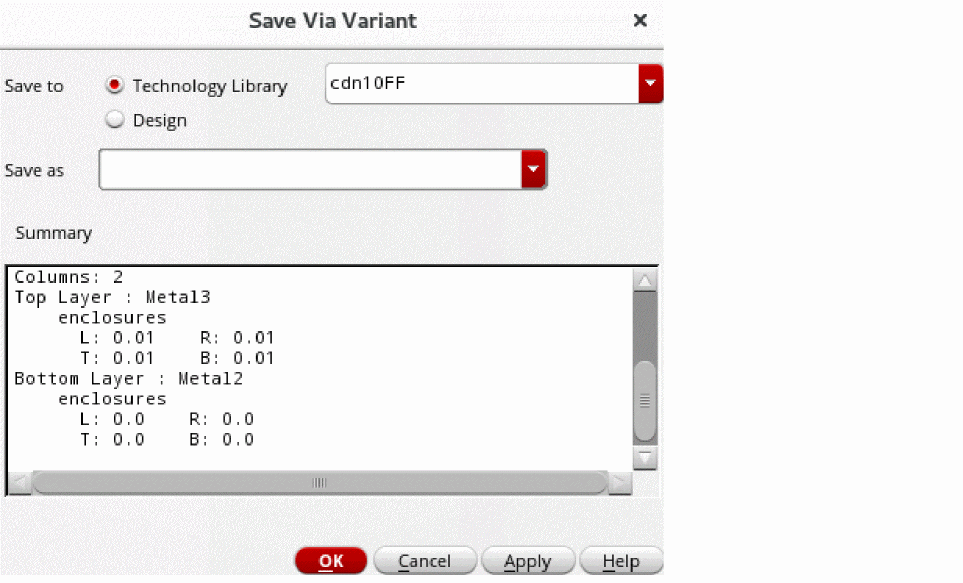

Creating or Updating a Via Variant
You can create via variants and update them as required.
Creating a Via Variant
- In the layout window, choose Create – Via to open the Create Via Form.
- Set Mode as Single.
- Select a standard or custom viaDef from the Via Definition list.
- On the System tab, change one or more via parameters, such as number of rows and columns, cut spacing, offset, or justification, as required.
-
Click the Save Via Variant icon.
The Save Via Variant form opens.
 - Choose where to save the via variant, either in the Technology Library or in the Design. If you want to save the via variant in the technology library, select one from the list.
- Specify a name for the via variant in the Save as field.
- Review the updated parameters in the Summary read-only list box.
-
Click OK.
If you specify an existing viaDef name, a message is displayed in the CIW that a viaDef with the specified name already exists.
The created via variant appears in the Via Definition list as a child node of the selected parent viaDef. - In the Via Definition list, expand the node and select the saved via variant.
Updating a Via Variant
To update an existing via variant:
- In the Create Via Form, select Mode as Single.
-
Click the Options button.
The Create Via Options form opens. -
Ensure that the Override Variant Parameters check box is selected.
You cannot update the via parameters of an existing via variant if the Override Variant Parameters check box is not selected. When this check box is not selected, the fields for specifying the cut class, cut rows and columns, and enclosure values are grayed out. - Click OK.
- Select a standard or custom via variant from the Via Definition list in the Create Via form.
- On the System tab, change one or more via parameters, such as number of rows and columns, cut spacing, offset, or justification, as required.
-
Click the Save Via Variant button.
The Save Via Variant form opens. - Choose where to save the via variant, either in the Technology Library or in the Design. If you want to save the via variant in the technology library, select one from the list.
- Specify a name for the via variant or select one from the Save as list.
- Review the updated parameters in the Summary read-only list box.
-
Click OK.
- If you specify the same name as that of an existing via variant name, a message box appears to confirm whether you want to overwrite the existing via variant. You can click Yes or No on the message box to specify your choice. The via variant is not updated if you click No.
- If you create a via variant that has the same viaDef and parameters as another existing via variant with a different name, a message box appears to confirm whether you want to rename the existing via variant. You can click Yes or No on the message box to specify your choice. The via variant is not renamed if you click No.
The updated via variant appears in the Via Definition cyclic list as a child node of the selected parent viaDef. - In the Via Definition cyclic list, expand the node and select the saved via variant.
Related Topics
Return to top